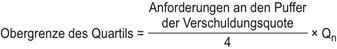

(1) Der maximal ausschüttungsfähige Betrag in Bezug auf die Verschuldungsquote im Sinne des § 10j Absatz 3 Satz 1 des Kreditwesengesetzes errechnet sich durch Multiplikation des nach Absatz 2 berechneten Betrags mit dem nach Absatz 3 festgelegten Faktor. Er reduziert sich durch jede nach § 10j Absatz 3 Satz 4 Nummer 1 bis 3 des Kreditwesengesetzes durchgeführte Maßnahme.
(2) Der zu multiplizierende Betrag ergibt sich aus
- 1.
den Zwischengewinnen, die nicht im harten Kernkapital nach Artikel 26 Absatz 2 der Verordnung (EU) Nr. 575/2013 enthalten sind, abzüglich etwaiger Gewinnausschüttungen oder Zahlungen im Zusammenhang mit den Maßnahmen nach § 10j Absatz 3 Satz 4 Nummer 1 bis 3 des Kreditwesengesetzes,
- 2.
zuzüglich der Gewinne zum Jahresende, die nicht im harten Kernkapital nach Artikel 26 Absatz 2 der Verordnung (EU) Nr. 575/2013 enthalten sind, abzüglich etwaiger Gewinnausschüttungen oder Zahlungen im Zusammenhang mit den Maßnahmen nach § 10j Absatz 3 Satz 4 Nummer 1 bis 3 des Kreditwesengesetzes,
- 3.
abzüglich der Beträge, die in Form von Steuern zu zahlen wären, wenn die unter den Nummern 1 und 2 aufgeführten Gewinne einbehalten würden.
(3) Liegt das von dem global systemrelevanten Institut vorgehaltene und nicht zur Einhaltung der Eigenmittelanforderungen nach Artikel 92 Absatz 1 Buchstabe d der Verordnung (EU) Nr. 575/2013 und zur Einhaltung der zusätzlichen Eigenmittelanforderungen zur Absicherung gegen Risiken einer übermäßigen Verschuldung nach § 6c sowie nach § 10 Absatz 3 und 4 des Kreditwesengesetzes verwendete Kernkapital, ausgedrückt als Prozentsatz der Gesamtrisikopositionsmessgröße im Sinne von Artikel 429 Absatz 4 der Verordnung (EU) Nr. 575/2013, innerhalb des
- 1.
ersten, das heißt des untersten, Quartils der Anforderung an den Puffer der Verschuldungsquote, so beträgt der Faktor 0;
- 2.
zweiten Quartils der Anforderung an den Puffer der Verschuldungsquote, so beträgt der Faktor 0,2;
- 3.
dritten Quartils der Anforderung an den Puffer der Verschuldungsquote, so beträgt der Faktor 0,4;
- 4.
vierten, das heißt des obersten, Quartils der Anforderung an den Puffer der Verschuldungsquote, so beträgt der Faktor 0,6.
(4) Die Ober- und Untergrenzen für jedes Quartil der Anforderung an den Puffer der Verschuldungsquote sind wie folgt zu berechnen:
 |
|  |
| |
Dabei steht Qn für die Ordinalzahl des betreffenden Quartils.